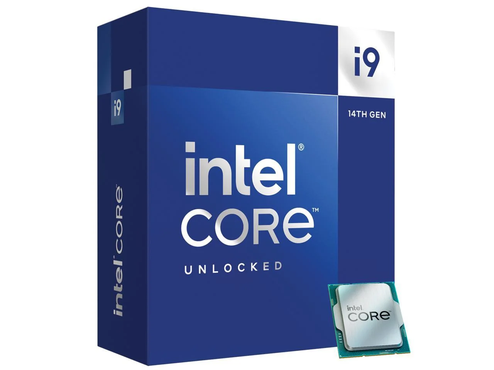

Топ 6 лучших игровых процессоров для компьютера в 2024 году
1. Intel Core i9-14900K
Флагманский процессор от Intel, который имеет 8 производительных ядер P, 16 энергоэффективных E и 32 потока (8*2+16). Они работают в гибридном режиме, оптимизируя производительность и энергопотребление в зависимости от нагрузки. Работает на базовой частоте 3,5 ГГц и может разгоняться до 6 ГГц благодаря технологиям Turbo Boost 3.0 и Thermal Velocity Boost. Изготовлен по техпроцессу 10 нм и имеет 36 МБ кэш-памяти 3-го уровня.
Способен справиться с любыми задачами, будь то игры, видеоредактирование, 3D-моделирование или работа с искусственным интеллектом.
Ядра/потоки 8P+16E/32
Частота (базовая/максимальная) 3,5/6 ГГц
Техпроцесс 10 нм
Тепловыделение 125 Вт
Сокет LGA 1700
Цена 48 000 - 68 000 ₽
Плюсы
Высокая производительность во всех сценариях
Поддержка новейших технологий
Больщой обьем кэш-памяти
Минусы
Высокое энергопотребление и тепловыделение
Необходимость качевственного охлаждения
Высокая цена
2. AMD Ryzen 9 7950X3D

Самый мощный процессор от AMD, который имеет 16 ядер и 32 потока. Работает на базовой частоте 4,5 ГГц и может разгоняться до 5,7 ГГц благодаря технологии Turbo Core. Изготовлен по техпроцессу 5 нм и имеет 144 МБ кэш-памяти (64 МБ L3-кэша и 80 МБ 3D V-Cache).
Обладает уникальной особенностью — дополнительным чиплетом с 3D-кэшем, который накладывается поверх штатного L3-кэша. Это расширяет кэш на 64 МБ и повышает производительность в играх.
Ядра/потоки 16/32
Частота (базовая/максимальная) 4,5/5,7 ГГц
Техпроцесс 5 нм
Тепловыделение 170 Вт
Сокет AM5
Цена 74 000 - 100 000₽
Плюсы
Отличная производительность в играх и многопоточных задачах
Инновационная технология 3D V-Cache
Современный техпроцесс
Минусы
Очень высокое тепловыделение и энергопотребление
Высокая цена
3. AMD Ryzen 7 5800X3D

Восьмиядерный процессор от AMD, который имеет 32 потока и частоту до 4,5 ГГц. Использует техпроцесс 7 нм и поддерживает технологию Turbo Core. 3D-кэш расширяет быстрое хранилище памяти на 64 Мбайт и улучшает быстродействие в играх.
Оптимальная предфлагманская модель на конец 2023 года.
Ядра/потоки 8/16
Частота (базовая/максимальная) 3,4/4,5 ГГц
Техпроцесс 7 нм
Тепловыделение 105 Вт
Сокет AM5
Цена 37 000 - 65 000₽
Плюсы
Отличная производительность в играх и многопоточных задачах
Инновационная технология 3D V-Cache
Современный техпроцесс
Минусы
Высокая цена
Необходимость качевственного охлаждения
3. AMD Ryzen 7 5800X3D
Восьмиядерный процессор от AMD, который имеет 32 потока и частоту до 4,5 ГГц. Использует техпроцесс 7 нм и поддерживает технологию Turbo Core. 3D-кэш расширяет быстрое хранилище памяти на 64 Мбайт и улучшает быстродействие в играх.
Оптимальная предфлагманская модель на конец 2023 года.
Ядра/потоки 8/16
Частота (базовая/максимальная) 3,4/4,5 ГГц
Техпроцесс 7 нм
Тепловыделение 105 Вт
Сокет AM5
Цена 37 000 - 65 000₽
Плюсы
Отличная производительность в играх и многопоточных задачах
Инновационная технология 3D V-Cache
Современный техпроцесс
Минусы
Высокая цена
Необходимость качевственного охлаждения
4. Intel Core i7−14700K

Восьмиядерный процессор от Intel, который имеет 28 потоков и частоту 3,4 ГГц. Изготовлен по техпроцессу 10 нм и поддерживает технологии Hyper-Threading, Turbo Boost 3.0 и Thermal Velocity Boost. Имеет два типа ядер: 8 производительных P и 12 энергоэффективных E.
Лучший выбор в актуальной линейке Intel Core.
Ядра/потоки 8P+12E/28
Частота (базовая/максимальная) 3,4/5,6 ГГц
Техпроцесс 10 нм
Тепловыделение 125 Вт
Сокет LGA 1700
Цена 35 000 - 55 000 ₽
Плюсы
Высокая производительность в однопоточных и многопоточных задачах
Поддержка новейших технологий
Гибридная архитектура с двумя типами ядер
Минусы
Высокое энергопотребление и тепловыделение
Необходимость качевственного охлаждения
AMD Ryzen 5 5600X

Шестиядерный процессор от AMD, который имеет 12 потоков и частоту 3,7 ГГц. Использует техпроцесс 7 нм и поддерживает технологию Turbo Core. Имеет 32 МБ кэш-памяти 3-го уровня.
Хорошо справляется даже с процессорозависимыми играми, а также другими повседневными задачами.
Ядра/потоки 6/12
Частота (базовая/максимальная) 3,7/4,6 ГГц
Техпроцесс 7 нм
Тепловыделение 65 Вт
Сокет AM4
Цена 12 000 - 19 000 ₽
Плюсы
Отличная производительность в играх и повседневных задачах
Низкое энергопотребление и тепловыделение
Низкая цена
Минусы
Меньше ядер и потоков, чем у конкурентов
Нет интегрированной графики
Не поддерживает технологию 3D V-Cache
6. Intel Core i5-12400F

Это шестиядерный процессор от Intel, который имеет 12 потоков и частоту до 4,4 ГГц. Изготовлен по техпроцессу 10 нм и поддерживает технологию Hyper-Threading.
Главный конкурент AMD Ryzen 5 5600X как по производительности, так и по цене.